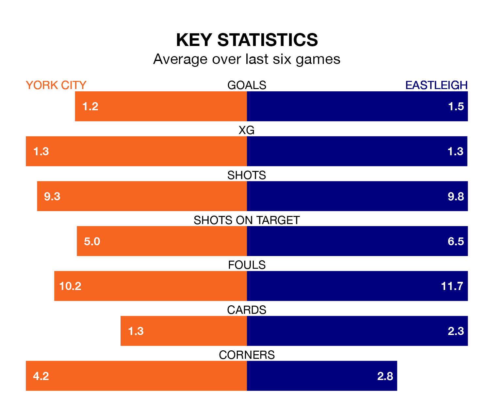

York City host Eastleigh on Saturday at the LNER Community Stadium in the National League.
In their last league match, on Tuesday, York drew with Halifax Town 1-1 away, with their goal scored by Dipo Akinyemi.
Eastleigh lost, 3-2 at home against Maidenhead United on Monday, with Chris Maguire and Solomon Nwabuokei on the scoresheet.
With 53 goals in 43 games so far this season, York are scoring at below the league average rate with 1.2 goals per game. And they are conceding more than average, letting in 67 goals at a rate of 1.6 per game.
Eastleigh, meanwhile, are above average scorers, with 1.7 goals per game, compared to a league average of 1.5. They have conceded 2.0 goals per game.
City are in reasonable form in the National League, with three wins and two draws from their last six games.
With a win and two draws over that period, the Spitfires's form is much worse – they have taken five points from 18, compared to the hosts' 11.
The away team are 17th in the table after 42 games, of which they have won 13 and drawn 11, earning 50 points.
York are one place ahead of Eastleigh in 16th, with 11 wins and 17 draws putting them on the same number of points.
In the last three years, York and Eastleigh have played each other on three occasions. Eastleigh won all of them.
Their last meeting was on October 21, when Eastleigh won 3-1 at home.
Updated: 16:41 (UTC), 04/04/24